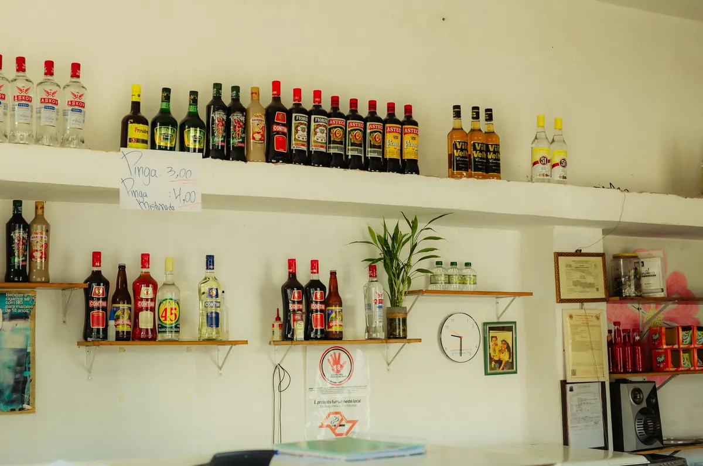
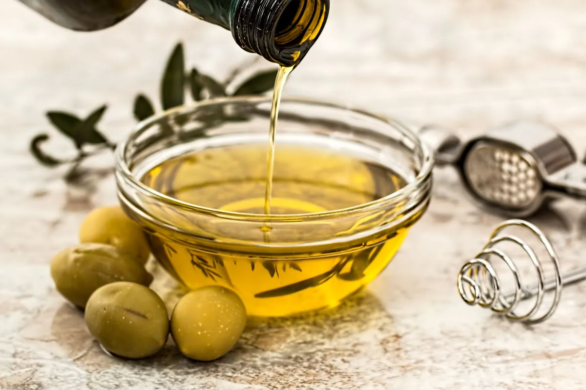

gut
gutBeyond Delicious: How Cheese Bacteria Boost Your Gut
Discover how the bacteria in cheese, like Lactobacillus and Bifidobacterium, can significantly boost your gut health. Le
Read article →Practical guides on sleep, gut health, stress, and daily movement — written for real schedules, not lab conditions.
gutDiscover how the bacteria in cheese, like Lactobacillus and Bifidobacterium, can significantly boost your gut health. Le
Read article →Discover how belly fat can worsen common vitamin deficiencies, turning simple issues into major health risks. Learn what
Read article →Discover Ozempic's brain breakthrough: how this diabetes drug is unlocking your hidden craving center and what it means
Read article →Discover how a simple Daily Gratitude Practice can boost your mood and reduce stress naturally. Learn science-backed, pr
Read article →Feeling down? Explore the science behind Daily Fruit Juice: A Sweet Sip Against the Blues? Discover how certain juices might impact your moo
2026-08-11 · Read →Tired of sugar cravings winning? Discover why cutting out all sweets might backfire and learn the real secrets to Sweet Tooth Survival: Why
2026-08-10 · Read →
Curious about the Booze Breakdown: Which Drink is Healthiest (or Least Unhealthy)? I've dug into the latest research to help you make smarte
2026-08-10 · Read →
Discover how Extra Virgin Olive Oil, the immune-boosting supplement that fights cancer & viruses, can significantly enhance your health. Lea
2026-08-07 · Read →